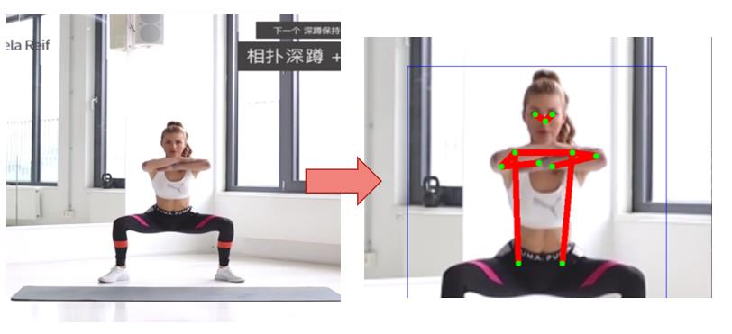
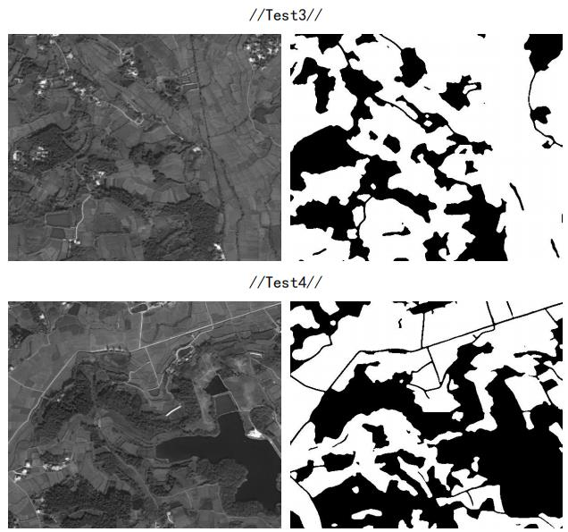
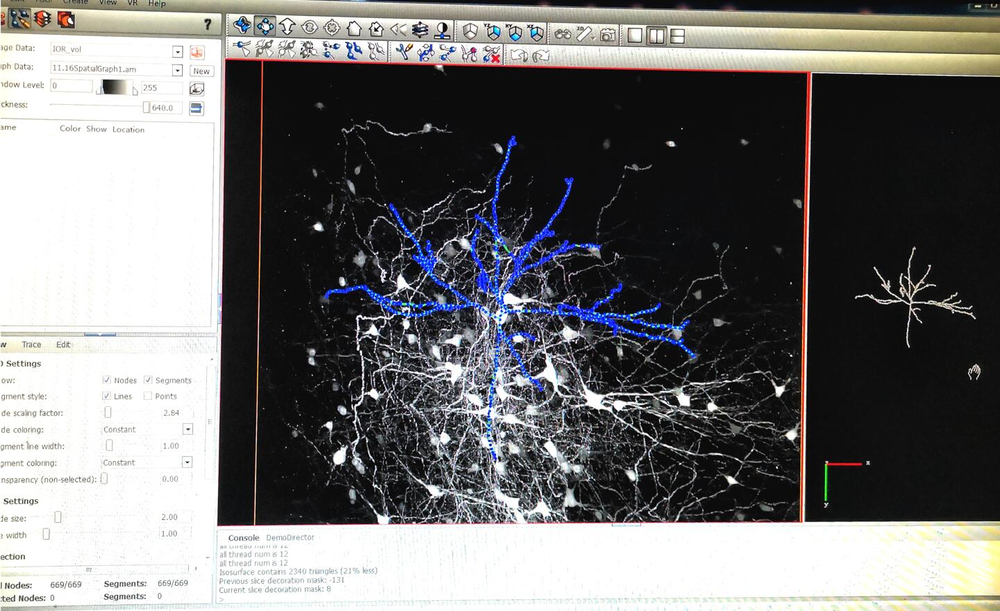
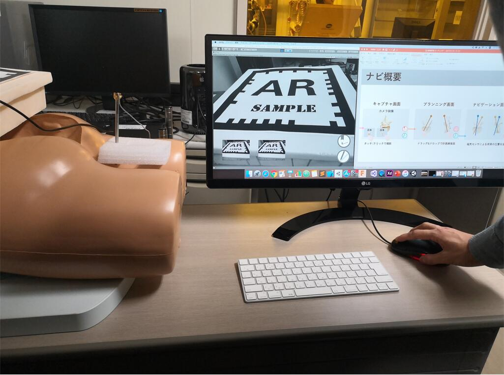
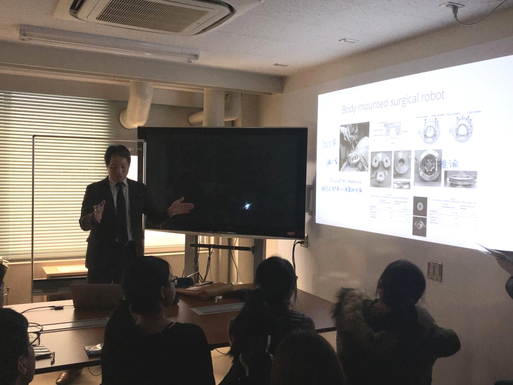
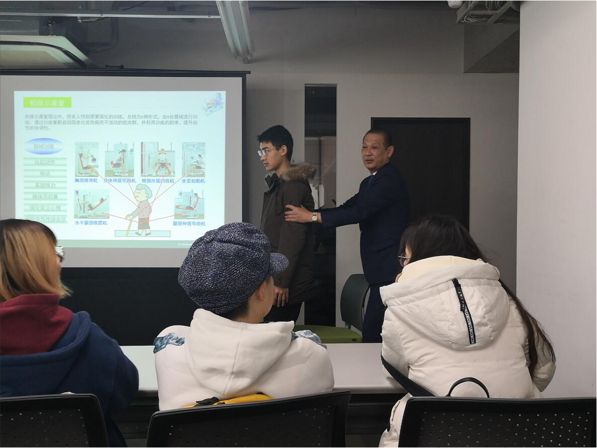
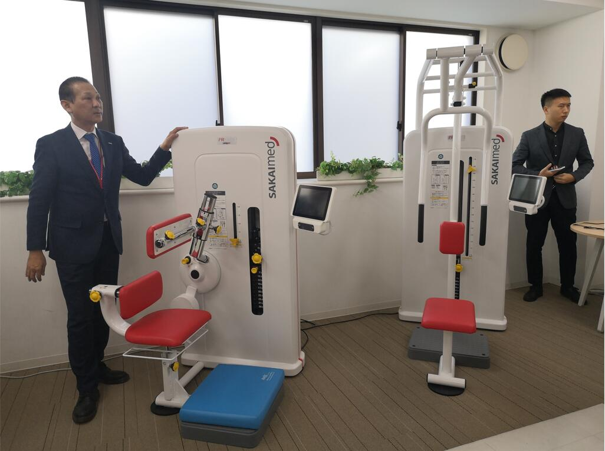
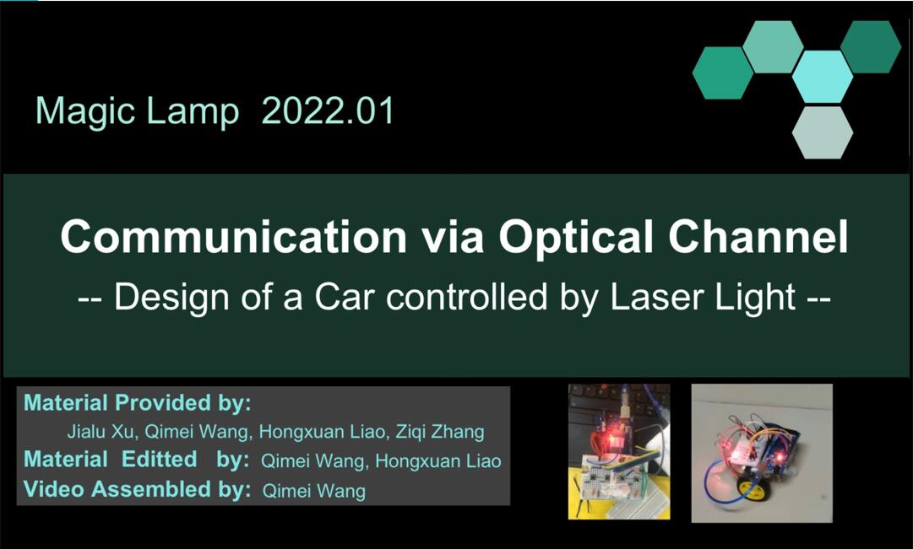
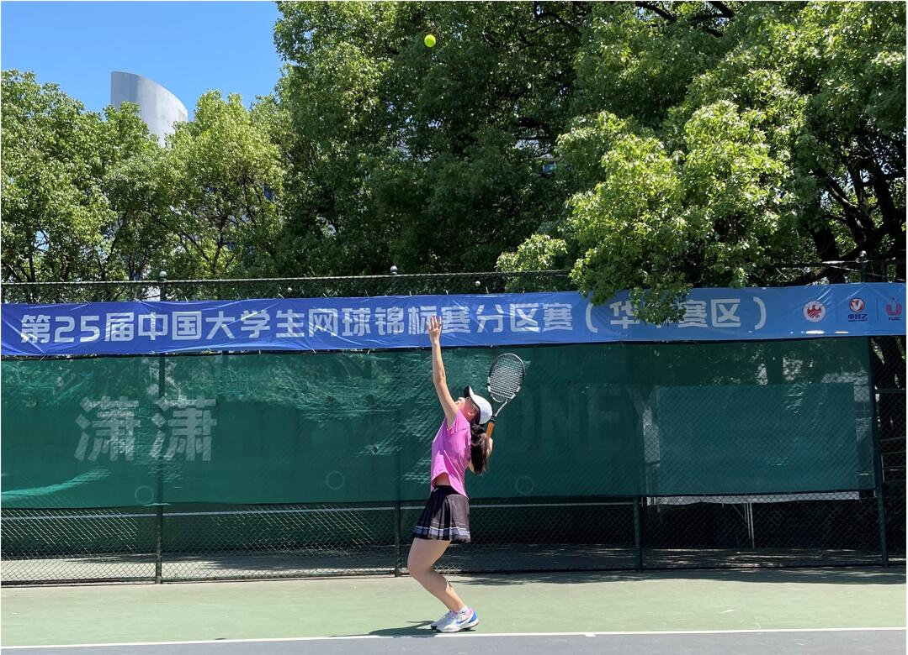

|
Qimei Wang
|
Biography
I am a junior biomedical engineering major at School of Engineering Sciences, Huazhong University of Science and Technology (HUST), supervised by Prof. TingWei Quan.
|
Research Interests
Medical Image Analysis, Machine learning,Medical Robotics .
|
Research Experiences & Academic Competitions
|
|
3D Reconstruction based on Binocular Camera Image
Wuhan National Laboratory for Optoelectronics, HUST
Advisor: Prof. TingWei Quan
|
Jun 2021-Present
|
|
•Participated in paper(Robust Ellipse Fitting Using Hierarchical Gaussian Mixture Models) reproduction and fitting edge by HGMM model.
•Participated in the research on binocular camera image restration.
•Designed a method of binocular camera 3D reconstruction with smaller point set.
•Preparing for an article at present.
|
Action-descriptive Text to Realistic Video Synthesis for Therapists
Wuhan National Laboratory for Optoelectronics, HUST
Advisor: Prof. Yue Guan
|
Jun 2021-Present
|
|

|
•Conducted 2D human pose estimation and joint recognition(on image and video) based on Part Affifinity Fields (PAFs)model.
•Participated in the research of semantic segmentation based on Bert model & BiLSTM-CRF layer.
|
|
Remote Sensing Image Segmentation based on U-NET
MathorCup Mathematical Modeling Challenge -- Big Data Competition
Advisor: Prof. TingWei Quan
|
Nov 2020-Apr 2021
|
|

|
•Conducted agricultural land segmentation in remote sensing image based on U-Net.
•Conducted edge smoothness and segment connection for the segmentation result by Erosion and Dilation Operations with appropriate kernels.
•Finally gained the accuracy of 99.02% on training set segmentation and wrote a report(No.2 in 1st Prize)
|
|
|
Academic Activities
Internship in Visible Brain-wide Network(VBN) Team
Wuhan National Laboratory for Optoelectronics, HUST
Advisor: Prof. Xiangning Li
|
Oct 2019- Jan 2020
|
|

|
Content:
►Learning methods of neuron reconstruction by Amira
►Labeling neuron body & tracking nerving endings on
3D mouse brain tomography data
|
|
Winter School in Tokyo, Japan
Tokyo Medical and Dental University,SAKAI Medical Co.,Ltd
|
Jan 2020
|
|

|

|
► Tokyo Medical and Dental University
Institute of Biomaterials and Bioengineering
Lecturer:Prof. Yoshikazu NAKAJIMA
Topic:Trend of big-data processing in medicine
--high dimensional, multi-disciplinary and AI analysis
|
|
► SAKAI Medical Co.,Ltd
Lecture topic:AI Rehabilitation Facilities for Old People
|

|

|
Awards
|
COMAP Mathematical Contest in Modeling, Meritorious Winner(7%)
National Computer Rank Examination Certificate of Level2, Excellent in c language programming
The 25th China University Tennis Championship,National 2nd Prize in female group
MathorCup Mathematical Modeling Challenge -- Big Data Competition, National 1st Prize
Outstanding team of college student volunteer social practice of 'San Xia Xiang' in HUST
Scholarship for Extracurricular Activities and Sports
|
2021
2021
2021
2020
2020
2020,2021
|
|
Coursework Overview
|
Courses in Computer Science
- Fundamental of Computer Programming (C++)
- Computer Systems and Data Structures
- Algorithm Design and Analysis
- Electronic Devices and Circuits (I)(II)
Courses in Imaging Science
- Optics
- Biomedical Photonics
- Laser and Photonics
- Medical Imaging Systems(future course)
Courses in Medicine & Biology
- Biomedical Sensor, Testing and Instrumentation
- Intelligent Medicine
- Quantitative Physiology
- Introductory Biology
- Introduction to Neuroscience
- Anatomy and Physiology
|
Courses in Machine Learning & Signal Processing
- Signal and System
- Biomedical Digital Signal Processing
- Fundamentals of Machine Learning
- Computational Neuroscience
Courses in Mathematics
- Calculus (I)(II)
- Linear Algebra
- Probability Theory and Mathematical Statistics
- Complex Function and Integral Transform
- Mathematical Physics Equation and Special Function
- Physics (I)(II)
|
|
Professional Skills
|
C,C++,Python,Matlab,Assembly Language,Arduino
Ps.In Project Practice course, our group designed and assembled a smart car, and programmed it by Arduino. It can be controlled by visible light, here is a short video for it:

|
Interests
|

|
▣ Tennis
Member of HUST Tennis Team
The 25th China University Tennis Championship,National 2nd Prize in female group,2021
The 17th Hubei College Tennis Championships,1st Prize in female group,2020
|
|
▣ Chinese Zeither
Member of HUST Chinese Orchestra
Participated in:
The 4th Chinese Traditional Culture Evening,2019
Hust New Year Gala for Chinese and International Students,2019
|
|
|
© Qimei Wang | Last Updated: April 2022
|
|
{kind=link}
{kind=link}
{kind=link}
{kind=link}
{kind=link}
{kind=link}
{kind=link}
{kind=link}
{kind=link}
{kind=link}